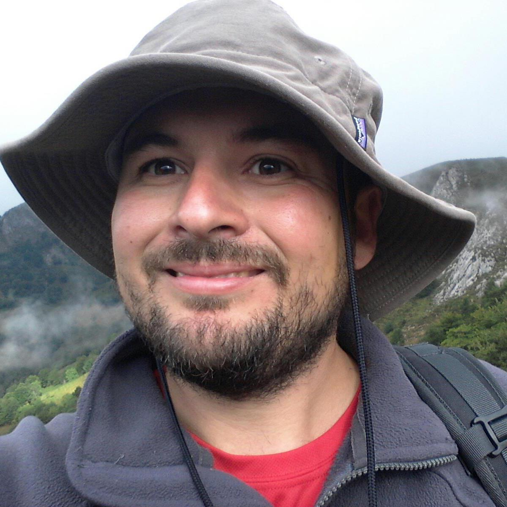

Home
FES WORKSHOP
16th - 18th November 2022
CAN BALASC - BARCELONA
Comparisons between forest ecosystem services: why and how?
OVERVIEW
Most biosphere’s ecosystems provide goods and services that are key to human well-being. Referred as ecosystem Services (ES) or more broadly Nature’s Contributions to People (NCP), their provisions vary depending on their geographical and biophysical context, the anthropogenic management and the history of previous disturbances. Ecosystem services have been frequently quantified as absolute physical magnitudes or as monetary values. These absolute values, however, may not always be the best approximation for comparing a certain ES provided by different ecosystems or under different historical or socio-ecological contexts. For instance, woodlands located in very arid areas may show lower annual carbon sequestration rates than forests in more humid areas, although the former may be closer to their maximum sequestration physical boundaries than the latter. Therefore, higher absolute values do not necessarily mean that a specific ecosystem is more valuable in context-dependent terms. For this reason, it is key to consider historical (e.g., ES past and future provision evolution), ecological, geographical (e.g., ES provision by spatially related ecosystems) and social (e.g., society ES demand) contexts for an adequate comparison of ES in different areas.
This workshop aims to identify when context dependency is relevant to measure ES and the different types of contexts that may exist for comparing ES (i.e., geographic -e.g., spatial scale-, temporal, social -e.g., society impact and demand-, etc.). In order to simplify the discussions about the topic, we will use forest ecosystem services (FES) as a case of study. In addition, to better address this framework, the workshop will be structured following a series of general conceptual questions, mainly focused in why should we or how can we compare FES.
QUESTIONS
Why should we compare FES? To highlight i) the main drivers explaining FES supply, and ii) the main reasons for (or against) the comparisons on the delivery of ES. For example, we will identify relevant cases where comparing ES should be (or not) recommended, including, among others: research aims, management purposes, conservation priorities, etc. Here we will include additional aspects such as the need to assess multiple values which can be dependent on the spatial and temporal scales, but also the importance of developing detailed assessments of the health of these ecosystems for human well being .
How can/should we compare FES? The objective is to establish the foundations for a framework of new metrics based on ES indicators that will enable us to compare a set of different ES among different social, spatial and temporal contexts. Specifically, we will discuss about:
Dealing with FES indicators and FES components To identify and enumerate which FES and which of their components (ecological/potential supply, demand, etc.) are sensitive to vary across contexts. Also, we will review the most frequently used indicators and proxies to quantify ES and those which can be applied to forests.
Dealing with the socio-ecological context. The benefits we obtain from the forests are multiple and include a wide variety of FES. However, different social groups perceive, for example, different types of FES. For this reason it seems key to assess multiple values of forests with respect to different societies characteristics and demands. Thus, here we will discuss how we can characterise the different socio-ecological systems, or why this key for assessing accurately FES.
Dealing with the spatial and the temporal contexts. ES delivery is not constant and their benefits may show spatial and temporal changes. Thus, to determine different levels of variation relevant for the comparison of ES is key. Here, we will determine the different mesurables periods and spatial scales and the type of data sources that can be useful to perform comparisons of ES taking into account the spatial and temporal scales. Particularly, we will assess spatial ES variation from macro-scale (ie. biogeographical context and over-country level) to local scale (landscape heterogeneity and city administrative demarcations). Also, we will identify the role of the temporal context (temporal trends and resolution) in ES comparison.
Dealing with relationships among FES and with standardization issues.ES relationships (i.e. synergies or trade-offs, bundles, …), or comparisons for single ES vs. multidimensionality/trade-offs are also key when dealing with ES comparisons. Finally, we will describe potential methodologies to transform or normalise ES values to make them comparable. Thus, we will review currently existing methods to compare ES and will develop new approaches to standardise ES depending on ES types and discussed contexts.
LIST OF ATTENDEES
Confirmed Workshop Participants:

Klara Winkler (KQ), McGill University, Canada (0000-0001-7086-5585)
I am is a sustainability scientist interested in human-nature relationships and processes of sustainable transformation. I use a governance perspective to research these phenomena on multiple levels of social-ecological systems – from local to supranational. With my research, I aim to better understand how actions of individuals fit into the broader network of societal activities and how they relate to and affect each other. Currently, I am the Deputy Science Director of the Canadian NSERC Strategic Network ResNet - a Canada wide research project looking at human-nature interactions in Canadian working landscapes.
Becks Spake (RS), University of Reading, UK (0000-0003-4671-2225)
I am a Lecturer in Ecology at the University of Reading, UK. Broadly, my research tries to identify how conservation, management and restoration actions can be spatially targeted to enhance biodiversity and ecosystem services, principally in forests. I am interested in developing analytical approaches for synthesising heterogeneous datasets for quantifying how management effects on biodiversity and forest health (susceptibility to pests and diseases), vary across different social-ecological contexts. I am also interested in the effects of large herbivores on forest landscapes and the importance of human-nature interactions for mental health.
Felix Eigenbrod (FE), University of Southampton, UK (0000-0001-8982-824X)
I am interested in understanding how people can better manage our landscapes sustainability to deliver the things we need now (food, low carbon energy, clean water) while also maintaining the biodiversity that ultimately sustains us all. I have a particular focus on understanding trade-offs, as we live in an age where there are no perfect choices - everything has an impact - but some things have less negative impacts than others (i.e. renewable energy as compared to fossil fuels). My work is highly applied, and targets questions such as where do we focus tree planting in the UK or what are the relative effects of public and private greenspace on mental health. I mostly working with existing ‘big data’ , and have a strong focus on methods development, and questions of spatial scale, and frequently link computer and statistical models in new ways.
Alessandra La Notte (ALN), Joint Research Centre of the European Commission, Italy (0000-0001-6951-709X)
I hold a PhD in Environmental Economics from the University of Trento (Italy) and a Master Degree in Environmental Management and Development from the Australian National University (Canberra, Australia). I am specialized in environmental and ecosystem accounting and in economic valuation of ecosystem services. In my current position as scientific officer at the Joint Research Centre of the European Commission, I work on the “Knowledge Innovation Project on Integrated Natural Capital Accounts” (KIP-INCA), which aims to design and implement satellite accounts for ecosystems and their services.
Jean Paul Metzger (JPM), University of São Paulo, Brazil (0000-0002-0087-5240)
Jean Paul Metzger is a Full Professor of Ecology at the University of São Paulo. He obtained his MSc and PhD in Landscape Ecology at the University of Toulouse, France. Since 1995, he has been working with landscape planning and biodiversity conservation in highly fragmented landscapes, essentially in the Brazilian Atlantic Forest region. His main research focuses are related to landscape connectivity, ecological thresholds and time-lag responses to landscape changes, and conservation planning. More recently, he is exploring the relationships between landscape structure, ecosystems services, and human well-being, besides investigating the efficiency of environmental policies to manage multifunctional landscapes. He also uses extensive modeling and scenario approaches to link landscape-level processes with restoration processes. He was the founder of the Brazilian Chapter of the International Association for Landscape Ecology (IALE-BR) and vice-president of IALE.
María Felipe-Lucia (MFL), Helmholtz Centre for Environmental Research - UFZ/ German Center for Integrative Biodiversity Research (iDiv) Halle-Jena-Leipzig, Germany (0000-0003-1915-8169)
My research seeks to understand the drivers and consequences of social-ecological interactions and its various implications on sustainability, mainly on ecosystem services flows and on equity in the access to those services. In particular, I investigate the effect of land use intensification on the relationships between biodiversity and ecosystem services, on the synergies and trade-offs between services, and on the social relationships between actors. I analyse these relationships at multiple spatial scales and model social-ecological scenarios to inform land management and restoration policies.

Ilse Geijzendorffer (ILSE), Louis Bolk Institute, Netherlands (0000-0002-8471-7695)
As a mathematical biologist (Wageningen University), I am interested in contributing to a more sustainable future. Since 2003 I have done scientific research in applied research centers in the Netherlands, Ireland and France. My focus area is human nature interactions, so ecosystem services, nature conservation and sustainable agriculture have been red threads in my research. Values of nature and ecosystem services determine how we shape our policies and management. I have been very fortunate to work with many highly qualified researchers around the world, among others in the GEO BON net werk. Currently I am the director of an independent research institute on sustainable agriculture food and health where we work on developing knowledge towards more sustainable foodsystems and healthy societies, together with practitioners, NGOs, industry and policymakers.
Tord Snäll (TS), Swedish University of Agricultural Sciences, Sweden (0000-0001-5856-5539)
I have three main research interests. One of my main interests is to increase our understanding and ability to predict the distribution or dynamics of (meta)populations, species, communities and ecosystem services. In addition, I investigate how these biodiversity measures and services can respond to future land use or climate change scenarios. Finally, I investigate the usefulness of citizen science data to answer basic and applied questions. Most of my studies concern the use and conservation of forest resources.
Jordi Martinez-Vilalta (JMV), CREAF/UAB, Spain (0000-0002-2332-7298)
I am full professor of ecology at the Autonomous University of Barcelona (UAB) and researcher at CREAF (Spain). I have been an honorary researcher at the University of Edinburgh (UK), and obtained an ICREA Academy distinction in 2014 and 2020. My research aims to improve our understanding of the functioning of forest systems and focuses on the study of: 1) the use and long-distance transport of water and carbon in plants; 2) the response of forests to environmental change, emphasising the impact of drought in the context of climate change; and 3) the distribution and variability of plant functional traits and their use for understanding and predicting vegetation function and dynamics, including the provision of ecosystem services.
Francisco Lloret (FLL), CREAF/UAB, Spain (0000-0002-9836-4069)
I am Ecology Professor at the Autonomous University of Barcelona (UAB, Spain) and researcher at the CREAF (Centre for Ecological Research and Forestry Applications, Spain). My research has focused on the study of the structure, functioning and dynamics of plant communities, and in particular Mediterranean ecosystems, in relation to different sources of anthropogenic disturbance, such as fire, droughts, pests, and invasions by exotic species. I address the mechanisms providing resilience in the face of the regime of climate change-driven disturbances, considering the functional and demographic attributes and the climatic niche of the species and its contribution to the assembly of these communities.
Josep M. Espelta (JE), CREAF, Spain (0000-0002-0242-4988)
PhD in Biological Sciences (UAB, 1992). My main research interests focus on the interaction among land use and forest management changes, particularly forest expansion and regrowth after rural abandonment, and the impact of climate change. My aim is to investigate the influence of land use legacies in forest dynamics and whether recent forests are more or less resilient to climate change than long-existing ones. Under this uncertain ecological scenario, I am interested in the factors driving tree growth and their sensitivity to climate, the variability of seed production, the balance among positive and negative plant-animal interactions (seed predation or dispersal) and, finally, the determinants of tree recruitment.
Javier Retana (JR), CREAF/UAB, Spain (0000-0002-7505-9467)
I am Professor of Ecology at the Autonomous University of Barcelona and researcher at CREAF, where I was director from 2005 to 2019. My research is based on the study of forest dynamics and the effect of disturbances, especially fire, on animal and plant communities and ecosystem services. I am currently the coordinator of the European LIFE MIDMACC project on the adaptation of Mediterranean mountains to climate change, and the national GREEN-RISK project on the limitations of integrated modelling at landscape and regional scales and the development of a procedure for future assessments of changes in biodiversity and ecosystem services.

Maurizio Mencuccini (MM), CREAF/ICREA, Spain/ University of Edinburgh, UK (0000-0003-0840-1477)
I work at the frontier between plant biology and environmental sciences, at the interface with global change. My major contributions to science are in the study of the carbon and water cycles of forests, across Boreal, temperate, tropical and Mediterranean biomes of Europe, the Americas, Australia and Africa. I have authored more than 200 peer-reviewed papers. I am very involved in debates concerning how more severe droughts, as a consequence of climate change, can accelerate tree mortality. One area of major contribution has been in identifying the processes by which plant physiological properties affect the likelihood of survival following extreme drought events. I am also very interested in how canopies of forest trees can act as filters of atmospheric nitrogen deposition via their leaf microbiome.
Organising committee:
Jose Valentin Roces-Diaz (JR), Universidad de Oviedo, Spain (0000-0003-2569-8049)
I studied Forestry and Environmental Engineering (Santiago de Compostela 2009) and obtained a PhD in Natural Resources and Biodiversity (2015, University of Oviedo). Currently I am assistant professor in forest planning and natural resources management at the University of Oviedo and previously, I have worked as postdoctoral researcher at Agroscope (Switzerland) CREAF and at Swansea University (UK). My main expertise focuses on: i) studying forests and forested landscapes, analysing the goods and services they provide to the society; and ii) integrating this information on regional planning for sustainable management.
Judit Lecina (JL), Technische Universität München, Germany (0000-0002-6867-5886)
I am an Environmental Scientist (University of Barcelona, 2011) and PhD in Terrestrial Ecology (University Autonomous of Barcelona, 2020). My main research interests are related to forest disturbance dynamics and ecosystem services. I’m currently an Alexander von Humboldt postdoctoral fellow at the Technical University of Munich, assessing the risk of losing forest ecosystem services due to disturbances. Previously, I was a postdoctoral fellow at CIBIO/InBIO (Portugal) analyzing the stakeholders’ perceptions of wildfires and the economic impacts of fire-management scenarios in ecosystem services, and a predoctoral fellow at CREAF analyzing the spatial patterns of forest ecosystem services, their conservation implications and their risk to climate change-hazards.
Maria Angeles Perez-Navarro (MAPN), King’s College London, UK (0000-0001-5553-995X)
I am a biologist (University of Murcia, 2014) and PhD in Terrestrial Ecology (University Autonomous of Barcelona, 2020). I’m currently working as a Post-doc research associate analysing the role of functional and demographic traits in invasive species success. My research interests are analysing changes in species distribution with global change, disentangling the role of species niche on population and community responses to disturbances and assessing the impact on management policies on those responses.

Luciana Jaime (LJ), CREAF/UAB, Spain (0000-0002-2452-6790)
I studied Biology at the Complutense University of Madrid (UCM, 2013) and obtained a PhD in Terrestrial Ecology at the Autonomous University of Barcelona (UAB, 2021). Currently, I have a postdoctoral position at the Centre for Ecological Research and Forestry Applications (CREAF, Spain). My main research lines focus on (1) assessing forest decay and mortality caused by insect pests in a context of climate change from an insect-host tree perspective, and (2) analyzing resilience metrics and indicators of ecological and socio-economical systems for supporting decision-making and management actions.

Albert Vilà (AV), CREAF/UAB, Spain (0000-0001-7589-7797)
I am PhD in Terrestrial Ecology (UAB 2012). My research focuses on understanding the factors that regulate forest demographics, functional biogeography, diversity, and functioning to global environmental change, and the integration of this information for management and conservation purposes. I address key questions at the intersection between ecology and biogeography, including theoretical and empirical development. I have primary focused on drought-stressed forests, either by distributional constraints (rear edge populations, and Mediterranean-type vegetation) or climate change-type drought, by combining large-scale field experiments and analysis of large datasets.
Victor Flo (VF), Imperial College of London, UK (0000-0003-1908-4577)
I am a Biosystems Engineer (Polytechnic University of Catalonia, 2013) and PhD in ecology from the Autonomous University of Barcelona (UAB, 2021). My research focuses on Land-Surface modelling, particularly on vegetation processes. I am interested in plant water and carbon economy and how it influences forest functioning, land-atmosphere interactions and the provision of ecosystem services in a context of global change.
FACILITIES
Can Balasc Biological Station

Biological station near Barcelona. Located in the Serra de Collserola Natural
Park, one of the metropolitan area of Barcelona’s largest and best
preserved forest areas, Can Balasc has laboratories and greenhouses, a
guest house with rooms for visiting researchers, and 100 ha of forests
and experimental sites for research purposes. It is ideal for evaluating
the effects of global change on Mediterranean metropolitan ecosystems,
which provide essential ecosystem services and are especially affected
by drivers of global change (land use changes, wildfires and invasive
species). Several field experiments that have been running for more than
15 years and are part of the Spanish and European Long Term Ecological
Research Networks (LTER-Spain and LTER-Europe) have been taking place at
Can Balasc since 2012.
FES workshop organising committee
fes@creaf.uab.cat